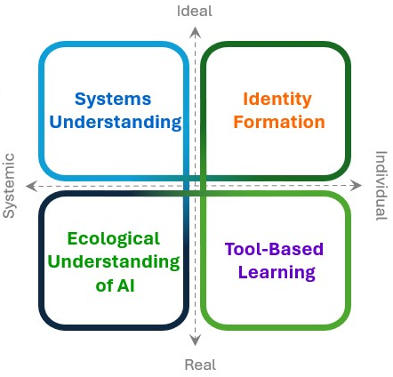
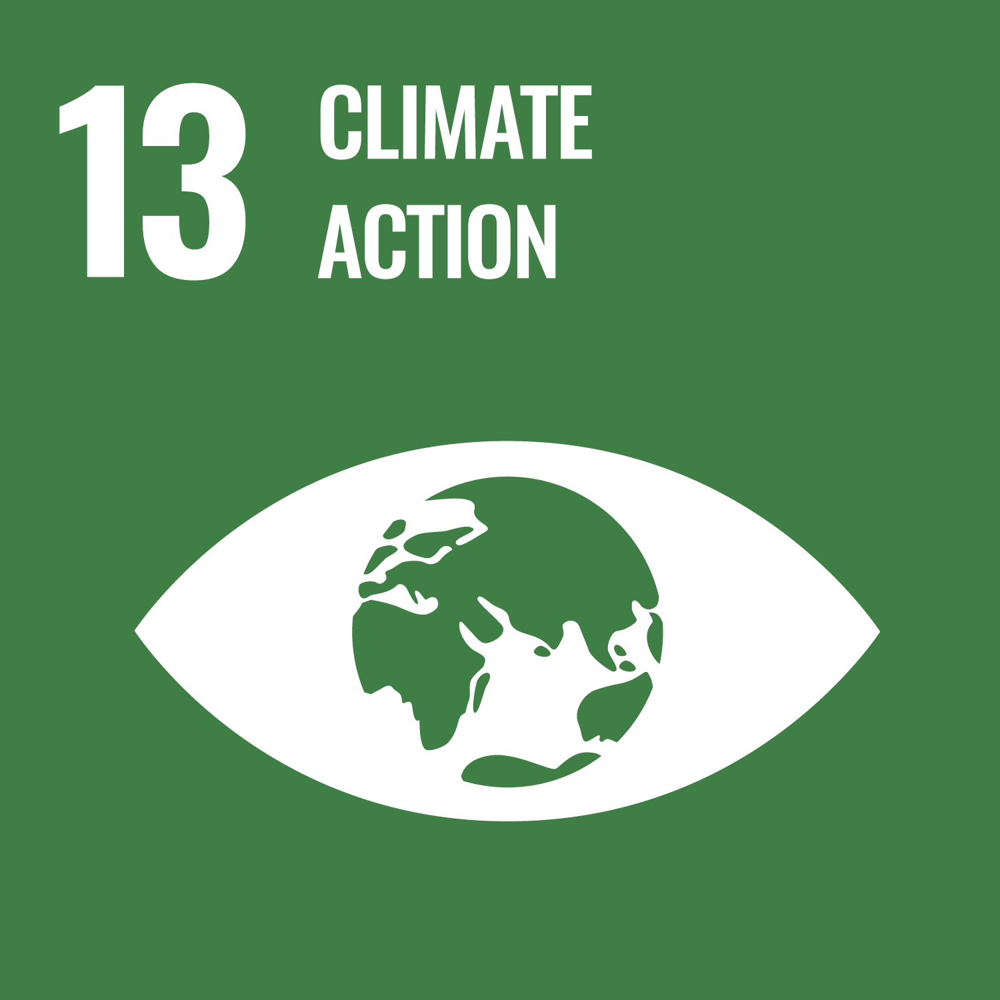
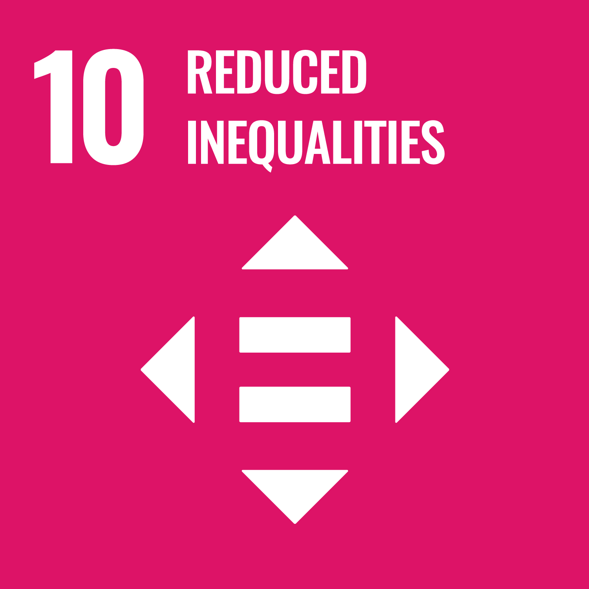

EcoAI Framework: A Socio-Pedagogical Model for the Anthropocene
The EcoAI Framework proposes an interdisciplinary approach to integrate Ecoliteracy and Artificial Intelligence (AI) into civic education in secondary schools, shaping a new generation of eco-technological citizens.
Artificial intelligence consumes energy, selects information and shapes the choices of learners, yet it is rarely read together with these effects. The EcoAI Framework, developed in Gianfranco Rubino's doctoral work (Learning Sciences and Digital Technologies, LUISS Guido Carli and University of Foggia), combines three levels: a theory (Ecodigital Posthumanism), a competence model (four dimensions) and a measurement tool (the EcoAI Index, five scales and 25 items), with a preliminary validation on secondary-school students.
Gianfranco Rubino is a sociologist. He is also an ASNOR trainer who trains trainers in AI literacy for companies, schools and individuals, and sits on the ASNOR technical-scientific committee as an AI literacy and ecoliteracy expert. A parallel line of research, the Algorithmic Oracle, studies how people and institutions delegate judgement to algorithmic systems and treat their outputs as authoritative without verifying them. About the author
Research
For colleagues and reviewers. The theory, the preprint, the EcoAI Index data with their declared limits.
Go to researchTraining
For schools, companies and professionals. Critical AI literacy that includes the environmental and social impacts of AI, and training for trainers.
Explore trainingInstitutions and projects
For institutions and clients. Assessment of AI systems in educational settings, administration and interpretation of the EcoAI Index, scientific consultancy.
Get in touchResearch Objectives
- Explore students' perceptions of sustainability and AI.
- Analyse the intersection between environmental and digital literacy.
- Develop an integrated pedagogical model for civic education.
Research Questions
- How do students perceive the impact of AI on environmental issues?
- What is the level of ecoliteracy and environmental civic competences among young people?
- How do digital media influence ecological citizenship?
Theoretical Framework
- Eco-digital Posthumanism: Theoretical elaboration of the eco-digital posthumanist theory.
- Ecomedia Literacy: Critical analysis of the ecological impact of media technologies.
- Digital Civic Education and SDGs: National and international regulatory context of reference.
Scientific Foundations of the Framework
Below are available the theoretical foundation of the EcoAI Framework defined as Eco-digital Posthumanism and
the systematic and bibliometric review on Ecoliteracy and Social Media.
The first elaborates the epistemological and pedagogical framework that integrates posthumanism, ecoliteracy, and AI literacy, outlining the four quadrants of the framework.
It constitutes the conceptual reference underlying the domains and sub-domains, providing criteria of theoretical coherence and methodological rigor, and establishing the scientific and philosophical basis on which the entire EcoAI architecture is built.
The systematic and bibliometric review constitutes the theoretical-empirical basis of the EcoAI Framework.
It analyzes the international literature on ecoliteracy and digital media, providing validated indicators and a mapping of research trends, ensuring transparency, replicability, and a direct connection with the scientific community.
In the EcoAI framework, it contributes to defining the referential context for the domain
Identity Formation, with particular attention to the sub-domains
Ecodigital Positionality & Imaginaries and
Algorithmic Bias, Fairness & Representation.
The Four Quadrants of the EcoAI Framework

The framework is structured into four interconnected domains that guide the development of integrated eco-digital competences. Click on each quadrant to explore the details.
Explore the framework competences or the empirical validation of the EcoAI Index.
Competence Development
The framework aligns EcoAI competences with the European GreenComp model, defining four levels of mastery. Select a competence to view the level descriptors.
Relationship between Quadrants and GreenComp Areas
Foundational frameworks for the development and assessment of EcoAI competences
The evaluative robustness of EcoAI is based on the deep integration with established standards of sustainability education and AI literacy. In particular, the framework takes GreenComp as its primary reference and integrates it with AI literacy models (Long & Magerko; AICOS; Generative AI Literacy) to achieve a multilayered assessment strategy combining qualitative depth and quantitative rigor.
GreenComp: European framework of competences for sustainability
GreenComp structures sustainability competence into four areas and twelve sub-competences (including: Systems thinking – G1, Critical thinking – G2, Agency – G7, Sustainability justice – G12). EcoAI explicitly adapts GreenComp, defining four levels of mastery – Basic, Intermediate, Advanced, Critical – and rubrics already contextualized to eco-digital scenarios. This correspondence provides a common language, recognized at European level, to describe competence progression, facilitating comparability and transferability of learning outcomes.
AI Literacy: Long & Magerko, AICOS and Generative AI Literacy
The framework integrates multiple models to fully cover the dimensions of AI literacy and Ministry guidelines for the introduction of Artificial Intelligence in schools. The model of Long & Magerko (Understanding, Interacting, Critiquing, Designing, Evaluating) is mapped onto EcoAI quadrants (e.g., Understanding → Systems Understanding; Interacting → Tool-Based Learning; Critiquing → Identity Formation; Designing → Hybrid modules; Evaluating → Digital ecosystems). AICOS provides a validated quantitative scale for measuring AI literacy (dimensions such as: understanding AI, working with AI, social impact, bias/fairness, decision and responsibility), useful as a psychometric benchmark to validate rubrics and questionnaires (Cronbach’s α > .8). Generative AI Literacy (Annapureddy et al.) specifically enriches the Tool-Based Learning domain with operational and reflective competences on generative systems.
The result is a multi-layer validation: GreenComp structures the qualitative levels; the specific descriptors for AI build on Long & Magerko and Generative AI Literacy; AICOS enables the quantitative validation of items and scales. Together, these elements ensure broad coverage, theoretical coherence, and empirical solidity.
Consolidated alignment table (Quadrants ↔ Competences ↔ AI Literacy ↔ SDG)
| EcoAI framework Quadrant | Key GreenComp competences | AI Literacy (Long & Magerko) | Associated SDGs |
|---|---|---|---|
| Systems Understanding | G1, G2, G3, G4, G9, G10, G11 | Understanding / Evaluating | 4, 13, 15, 17 |
| Ecological Understanding of AI | G4, G12 | Critiquing / Evaluating | 4, 9, 12, 13, 16 |
| Tool-Based Learning | G5, G6 | Interacting / Designing | 4, 9, 11, 12, 13 |
| Identity Formation | G7, G8, G11 | Interacting / Critiquing / Designing | 4.7, 5, 10, 16 |
Integration of SDGs in the European and Italian context
The EcoAI Framework aims to deepen the links already outlined in the SDGs by building targeted connections with the most relevant goals.
For example, for AI energy consumption (SDGs 10 and 13), it is relevant to develop modules that estimate the carbon and water footprint of AI systems while analyzing
the unequal distribution of ecological costs. Similarly, through Hybrid learning modules (SDG 4.7), it is possible
to activate global citizenship practices involving human-AI collaboration on transnational environmental issues.
The EcoAI rubrics already integrate these connections, explicitly incorporating SDG targets into the level descriptors.
At the Critical level of the Agency competence, for example, the ability to propose AI-assisted interventions
for climate justice in line with target 13, or to contribute to multi-stakeholder partnerships for sustainable innovation
in line with target 17, is included. In this way, the framework does not consider the SDGs as external elements, but as constitutive references
already woven into its pedagogical architecture.
Alignment with the Sustainable Development Goals (SDGs)
The framework engages four Sustainable Development Goals with an explicit argument, and relates to five more at a weaker level. The sections below state which dimension of the framework supports each goal and how far the evidence goes.
SDG 4: Quality Education (target 4.7)
The framework proposes ecoliteracy and critical AI literacy competences for secondary education, aligned with GreenComp, and the EcoAI Index as a group-level monitoring tool. Dimensions: Systems Understanding, Tool-Based Learning, Identity Formation.
Status: Model and instrument developed. Empirical validation is preliminary (two school surveys, not nationally representative).

SDG 13: Climate Action
Ecological Understanding of AI brings the energy use and infrastructure of AI systems into teaching, and Systems Understanding develops the reading of feedback loops. The AATI scale records declared awareness of the environmental risks of AI.
Status: Conceptual and didactic contribution. The Index records declarations and not behaviour.

SDG 10: Reduced Inequalities
Identity Formation addresses bias, fairness and representation in algorithmic systems, with environmental and climate justice as a criterion of analysis.
Status: Conceptual contribution. The current data include no socio-economic information and do not allow territorial comparisons.
SDG 16: Peace, Justice and Strong Institutions
The framework treats algorithmic accountability and civic participation as educational objectives, operationalised in part by the VAL and AGY scales.
Status: Conceptual contribution. AGY records declared civic agency and VAL declared values, subject to social desirability.
Other SDG connections